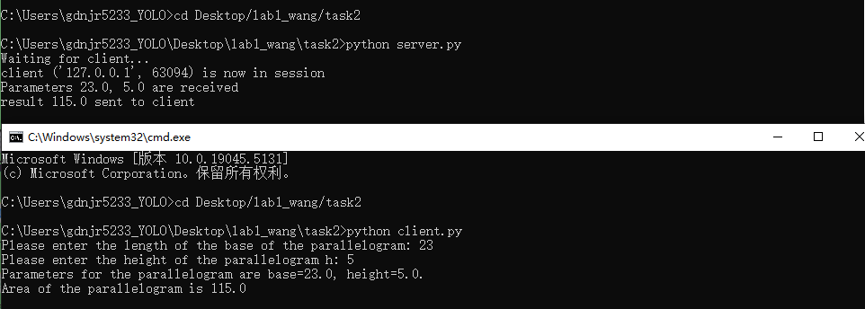

Лаб №1 - Работа с сокетами
Группа:D3310 Студент: Ван Цзынин
Введение
В рамках данной лабораторной работы мы рассмотрели основы работы с сокетами для создания простого многопользовательского чата. Сокеты используются для установления соединений между клиентами и серверами, что является основой сетевого взаимодействия в современных приложениях.
Описание реализации
Сервер
Серверная часть реализована с использованием стандартного модуля socket и threading для многозадачности. Сервер слушает указанный порт и обрабатывает соединения от нескольких клиентов, пересылая полученные сообщения всем подключенным пользователям.
Клиент
Клиентская часть подключается к серверу и позволяет пользователю отправлять сообщения. Для обеспечения параллельной работы клиент принимает сообщения в одном потоке, а в другом потоке отправляет сообщения на сервер.
Многозадачность
Для обработки нескольких клиентов одновременно используется модуль threading, который позволяет серверу и клиентам работать в многозадачном режиме. Каждый новый клиент обрабатывается в отдельном потоке.
Выполнения
task1
Реализовать клиентскую и серверную часть приложения. Клиент отправляет серверу сообщение «Hello, server», и оно должно отобразиться на стороне сервера. В ответ сервер отправляет клиенту сообщение «Hello, client», которое должно отобразиться у клиента.
task1_server.py
from socket import *
server_socket = socket(AF_INET, SOCK_DGRAM)
server_address = ('localhost', 9090)
server_socket.bind(server_address)
print("UDP is running")
while True:
print("waiting for data...")
data, client_address = server_socket.recvfrom(1024)
if not data:
break
print(f"Message from client '{data.decode()}' was received from client.", flush=True)
response = "Hello, Client!"
server_socket.sendto(response.encode(), client_address)
print(f"Message '{response}' was sent to client.")
server_socket.close()
task1_client.py
from socket import *
client_socket = socket(AF_INET, SOCK_DGRAM)
data_for_server = "Hello, Server!"
client_socket.sendto(data_for_server.encode(), ('localhost', 9090))
print(f"Message: '{data_for_server}' was sent to server.")
data_from_server, addr = client_socket.recvfrom(1024)
print(f"Message: '{data_from_server.decode()}' was received from server.")
task1_screenshot

task2
Реализовать клиентскую и серверную часть приложения. Клиент запрашивает выполнение математической операции, параметры которой вводятся с клавиатуры. Сервер обрабатывает данные и возвращает результат клиенту.
task2_server.py
from socket import *
import time
def parallelogram_area(a, h):
return a * h
server_socket = socket(AF_INET, SOCK_STREAM)
server_socket.bind(('localhost', 9090))
server_socket.listen(1)
print("Waiting for client...")
while True:
connection, addr = server_socket.accept()
try:
time.sleep(3)
print(f"client {addr} is now in session")
data = connection.recv(1024).decode()
if data:
base, height = map(float, data.split())
print(f"Parameters {base}, {height} are received")
area = parallelogram_area(base, height)
connection.sendall(str(area).encode())
print(f"result {area} sent to client")
finally:
connection.close()
task2_client.py
from socket import *
client_socket = socket(AF_INET, SOCK_STREAM)
client_socket.connect(('localhost', 9090))
try:
base = float(input("Please enter the length of the base of the parallelogram: "))
height = float(input("Please enter the height of the parallelogram h: "))
print(f"Parameters for the parallelogram are base={base}, height={height}.")
message = f"{base} {height}"
client_socket.sendall(message.encode())
data = client_socket.recv(1024).decode()
print(f"Area of the parallelogram is {data}")
finally:
client_socket.close()
task2_screenshot

task3
Реализовать серверную часть приложения. Клиент подключается к серверу, и в ответ получает HTTP-сообщение, содержащее HTML-страницу, которая сервер подгружает из файла index.html.
task3_server.py
from socket import *
import os
# 获取当前文件所在的目录
current_dir = os.path.dirname(os.path.abspath(__file__))
html_file_path = os.path.join(current_dir, 'index.html')
# 确保 HTML 文件存在
if not os.path.exists(html_file_path):
raise FileNotFoundError(f"HTML file not found at: {html_file_path}")
# 创建服务器套接字
server_socket = socket(AF_INET, SOCK_STREAM)
server_socket.bind(('localhost', 9090))
server_socket.listen(1)
print("Server is running...")
print("http://localhost:9090")
while True:
connection, client_address = server_socket.accept()
try:
print(f"Client: {client_address} is now in session.")
# 接收客户端请求
request = connection.recv(1024).decode()
print(f"Client request: \n{request}")
# 读取 HTML 文件内容
with open(html_file_path, 'r', encoding='utf-8') as file:
html_content = file.read()
# 创建 HTTP 响应
response = f"""HTTP/1.1 200 OK
Content-Type: text/html
Content-Length: {len(html_content)}
{html_content}"""
# 发送响应
connection.sendall(response.encode())
print("Response is sent to a client.")
finally:
connection.close()
print(f"Connection with client {client_address} is closed.")
task3_screenshot

task4
Реализовать двухпользовательский или многопользовательский чат. Для максимального количества баллов реализуйте многопользовательский чат.
task4_server.py
from socket import *
import threading
clients = []
usernames = []
def handle_client(client_socket, address):
print(f"{address} entered the session.")
username = client_socket.recv(1024).decode()
usernames.append(username)
clients.append(client_socket)
broadcast(f"{username} entered the session".encode(), client_socket)
while True:
try:
message = client_socket.recv(1024)
if message:
broadcast(f"{username}: {message.decode()}".encode(), client_socket)
else:
remove_client(client_socket)
break
except:
continue
def broadcast(message, client_socket):
for client in clients:
if client != client_socket:
try:
client.send(message)
except:
remove_client(client)
def remove_client(client_socket):
if client_socket in clients:
index = clients.index(client_socket)
clients.remove(client_socket)
username = usernames[index]
usernames.remove(username)
broadcast(f"{username} left.".encode(), client_socket)
server_socket = socket(AF_INET, SOCK_STREAM)
server_socket.bind(('localhost', 9090))
server_socket.listen(5)
print("Server is running...")
while True:
client_socket, address = server_socket.accept()
threading.Thread(target=handle_client, args=(client_socket, address)).start()
task4_client.py
from socket import *
import threading
def receive_messages(client_socket):
while True:
try:
message = client_socket.recv(1024).decode()
if message:
print(message)
else:
break
except:
print("unable to send message")
client_socket.close()
break
client_socket = socket(AF_INET, SOCK_STREAM)
client_socket.connect(('localhost', 9090))
threading.Thread(target=receive_messages, args=(client_socket,)).start()
username = input("Please enter your name: ")
client_socket.send(username.encode())
while True:
message = input()
if message.lower() == 'exit':
break
client_socket.send(message.encode())
client_socket.close()
task4_screenshot

task5
Написать простой веб-сервер для обработки GET и POST HTTP-запросов с помощью библиотеки socket в Python.
task5_server.py
import socket
import threading
HOST = 'localhost'
PORT = 9090
grouped_grades = {}
def handle_client(connection, address):
request = connection.recv(1024).decode()
parts = request.split(' ')
if len(parts) >= 3:
method, path, protocol = parts[0:3]
print(f"Получен {method} запрос от {address}")
if method == 'GET':
send_response(connection, '200 OK', 'Content-Type: text/html', provide_with_html())
elif method == 'POST':
content_length = int(request.split('Content-Length: ')[1].split('\r\n')[0])
body = request.split('\r\n\r\n', 1)[1]
while len(body.encode('utf-8')) < content_length:
body += connection.recv(1024).decode()
params = parse_post_data(body)
discipline, grade = params.get('discipline', ''), params.get('grade', '')
grouped_grades[discipline] = grouped_grades.get(discipline, []) + [grade]
send_response(connection, '200 OK', 'Content-Type: text/plain', 'Принято!')
else:
send_response(connection, '405 Method is Not Allowed', 'Content-Type: text/plain',
'К сожалению, такого метода нет в листе разрешенных, попробуйте еще раз(((((')
else:
send_response(connection, '400 Bad Request', 'Content-Type: text/plain', 'Ошибка')
connection.close()
def send_response(connection, status, content_type, body):
response = f"""HTTP/1.1 {status}
{content_type}
Content-Length: {len(body)}
{body}"""
connection.sendall(response.encode())
def parse_post_data(data):
return {key: value.replace('+', ' ') for key, value in [pair.split('=') for pair in data.split('&')]}
def provide_with_html():
rows = ''.join([f"<tr><td>{discipline}</td><td>{','.join(grades)}</td></tr>" for discipline, grades in grouped_grades.items()])
return f"""<!DOCTYPE html>
<html>
<head>
<title>Grades</title>
</head>
<body>
<h1>Grades</h1>
<table border="1">
<tr><th>Discipline</th><th>Grade</th></tr>
{rows}
</table>
</body>
</html>"""
with socket.socket(socket.AF_INET, socket.SOCK_STREAM) as s:
s.bind((HOST, PORT))
s.listen()
print("Сервер на порте", PORT)
while True:
connection, address = s.accept()
thread = threading.Thread(target=handle_client, args=(connection, address))
thread.start()
Код сервера для многопользовательского чата
import socket
import threading
# 定义全局变量
clients = []
# 处理客户端连接的函数
def handle_client(client_socket, client_address):
print(f"[INFO] Клиент подключен: {client_address}")
clients.append((client_socket, client_address))
while True:
try:
message = client_socket.recv(1024).decode("utf-8")
if message:
print(f"[Cообщение от {client_address}]: {message}")
broadcast(message, client_address)
except:
print(f"[Отключение клиента]: {client_address}")
clients.remove((client_socket, client_address))
client_socket.close()
break
# 广播消息的函数
def broadcast(message, sender_address):
for client_socket, client_address in clients:
if client_address != sender_address: # 不发送给消息的发送者
try:
client_socket.send(f"\n[{sender_address[1]}]: {message}".encode("utf-8"))
except:
client_socket.close()
clients.remove((client_socket, client_address))
# 主函数
def main():
server = socket.socket(socket.AF_INET, socket.SOCK_STREAM)
server.bind(("0.0.0.0", 12345)) # 监听端口
server.listen(5)
print("[SERVER STARTED]")
while True:
client_socket, client_address = server.accept()
threading.Thread(target=handle_client, args=(client_socket, client_address)).start()
if __name__ == "__main__":
main()
Код клиента для многопользовательского чата
import socket
import threading
# 处理接收消息的函数
def receive_messages(client_socket):
while True:
try:
message = client_socket.recv(1024).decode("utf-8")
if message:
print(message)
except:
print("[Соединение закрыто]")
client_socket.close()
break
# 主函数
def main():
client = socket.socket(socket.AF_INET, socket.SOCK_STREAM)
client.connect(("127.0.0.1", 12345)) # 连接到服务器
threading.Thread(target=receive_messages, args=(client,)).start()
while True:
message = input("Вы: ")
if message.lower() == "exit":
client.close()
break
client.send(message.encode("utf-8"))
if __name__ == "__main__":
main()
task5_screenshot_Интерфейс сервера

task5_screenshot_Интерфейс клиента

Заключение
Лабораторная работа помогла понять основные принципы работы с сокетами и многозадачностью в Python. Эти знания являются основой для создания более сложных сетевых приложений.